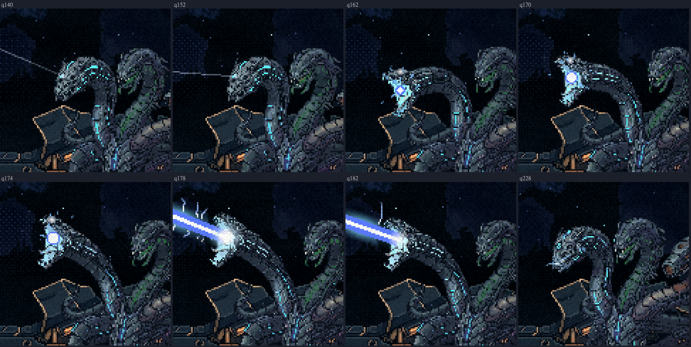
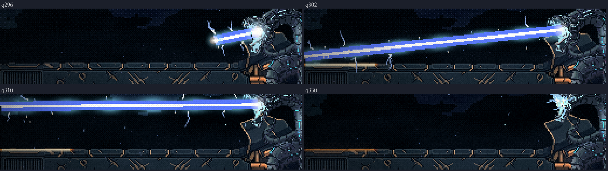
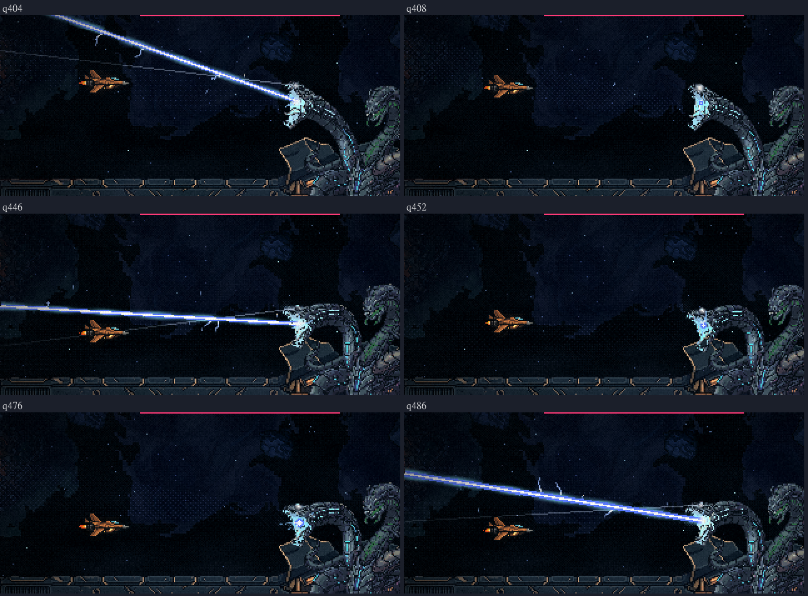

A Serpente: o raio da azul no jogo
03/11/2026 · pausa 4 · nada foi commitado.
O que entrou
O raio é o das rodadas 8 a 12 que você aprovou, só na forma A:
- Duas fatias grandes, a de cima e a de baixo, que começa cortando o casco. Cada uma vem dentro do mesmo aviso de 1,6 s:
- a cabeça fechada segue a nave, com um pulso do olho a cada leitura;
- o foco do olho percorre o caminho uma vez, e o olho trava;
- a boca abre carregando, com a energia caindo para dentro dela;
- o raio sai, e a cabeça acompanha o raio; depois ela fecha a boca e recua.
- O caminho que ainda vem fica sombreado de leve, exatamente por onde o raio vai passar.
- No casco, o corte esfria do branco ao laranja e ao vermelho, com faíscas saindo retas (é vácuo).
- Depois vem a salva de 6 raios finos, sorteada a cada luta. Cada um cobre a nave e sempre deixa uma saída de até 25 px.
Ampliado



Medido
- O raio do jogo é o da maquete aprovada, quadro a quadro. Rodei o código do jogo com o relógio, os pontos e a nave da maquete e comparei com o registro dela: 470 quadros, 0 px de diferença na posição do raio e 0 quadros com a cabeça diferente. Para ter certeza de que a comparação pega erro, rodei também com a semente errada da salva: ela acusou 58 px.
- No jogo:
- a nave que segue o manequim da maquete não é mordida nenhuma vez;
- a nave parada no caminho é mordida em todas as 8 fatias;
- em 200 sorteios da salva, com a boca de verdade, a maior saída é de 24,5 px.
- Ela fica no posto durante a chuva e o raio, e a fase 3 roda inteira até o hangar.
O que resolvi no caminho (você pode vetar)
- O sombreado das fatias grandes levava 50 ms para calcular de uma vez, e o jogo daria um tranco no começo de cada uma. Agora ele é calculado aos poucos, no segundo de espera antes da primeira leitura, e guardado para as próximas vezes.
- A marca no casco leva alguns segundos para esfriar. Antes ela sumiria de uma vez quando o raio terminasse. Agora ela continua esfriando enquanto a luta segue.
- A salva é sorteada fatia a fatia, com a nave onde ela está naquela hora. A maquete sorteava as seis no começo, contando com o manequim. A regra é a mesma, e a comparação acima prova que, com a nave no manequim, o resultado é idêntico.
- Os vídeos da sonda piscavam a nave, porque ela fica invulnerável para contar os acertos. Daqui em diante a nave aparece sempre. Os vídeos da chuva vão ser refeitos assim na folha final.
Para você conferir
- O raio ficou como o que você aprovou?
- Posso seguir para o gás + faísca?